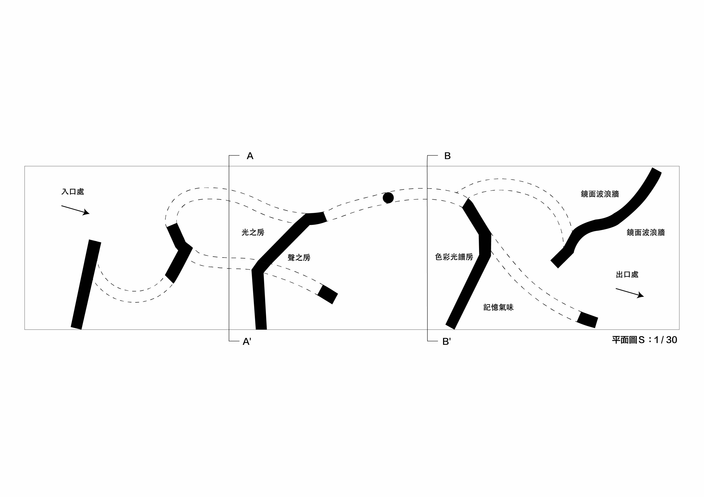
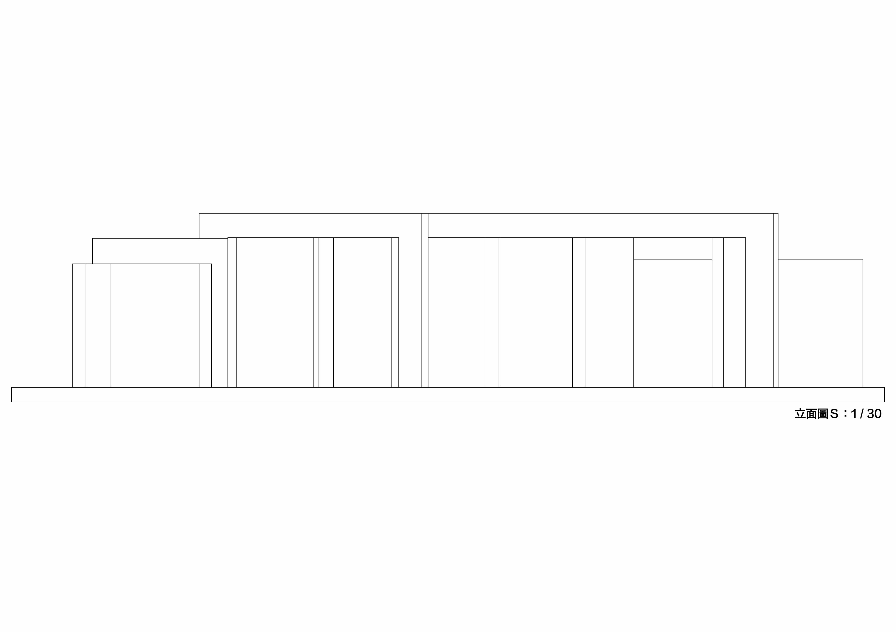
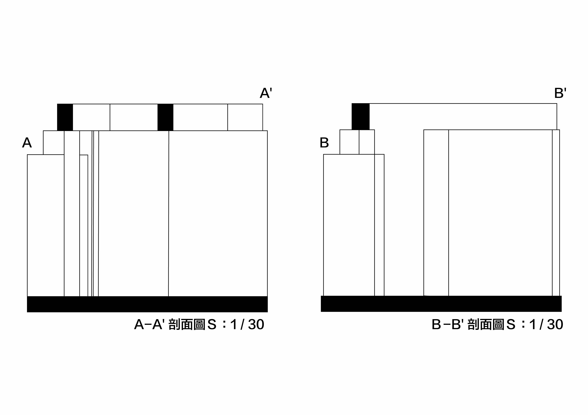
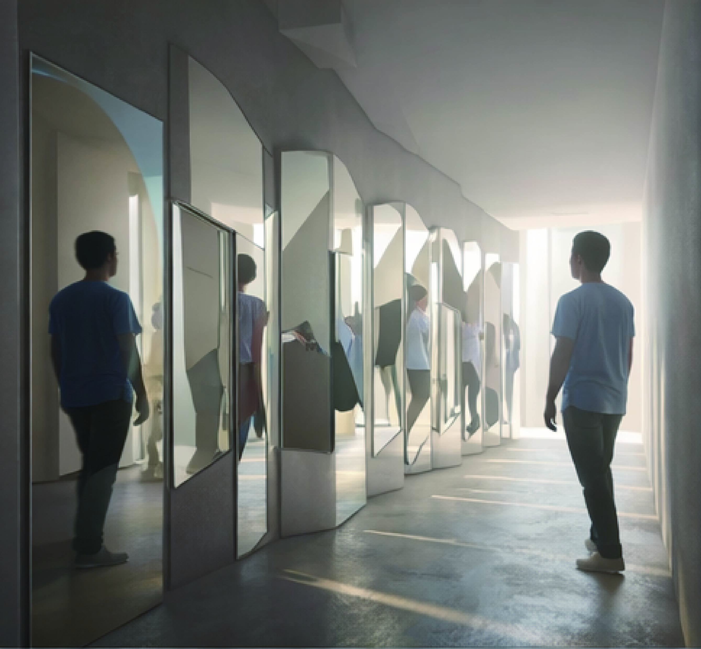
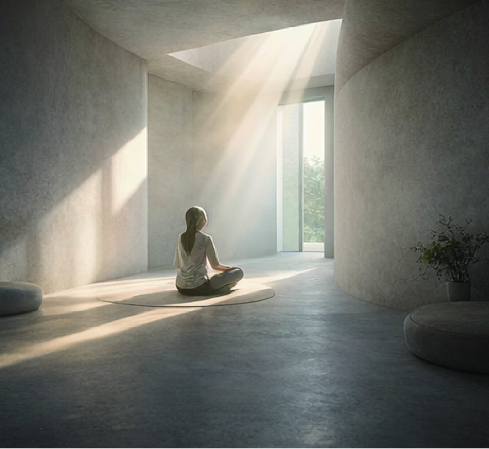
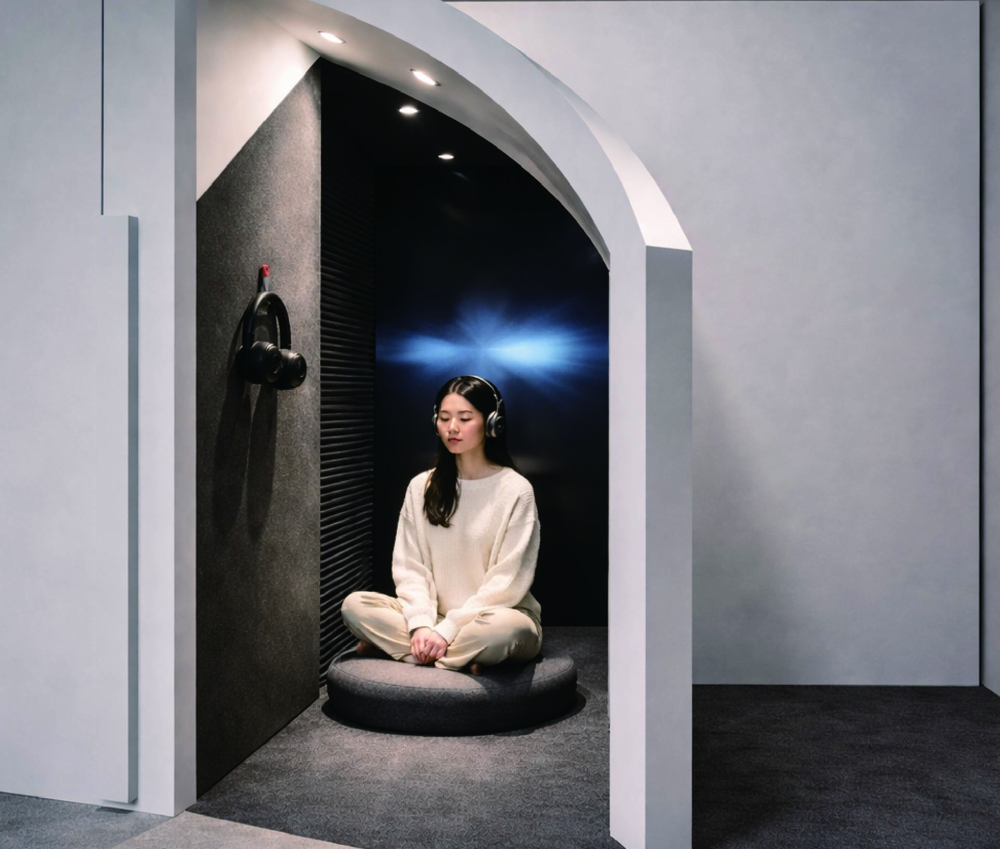
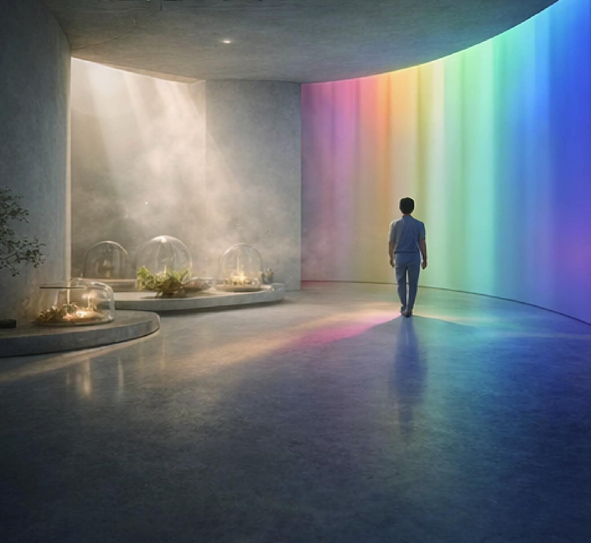
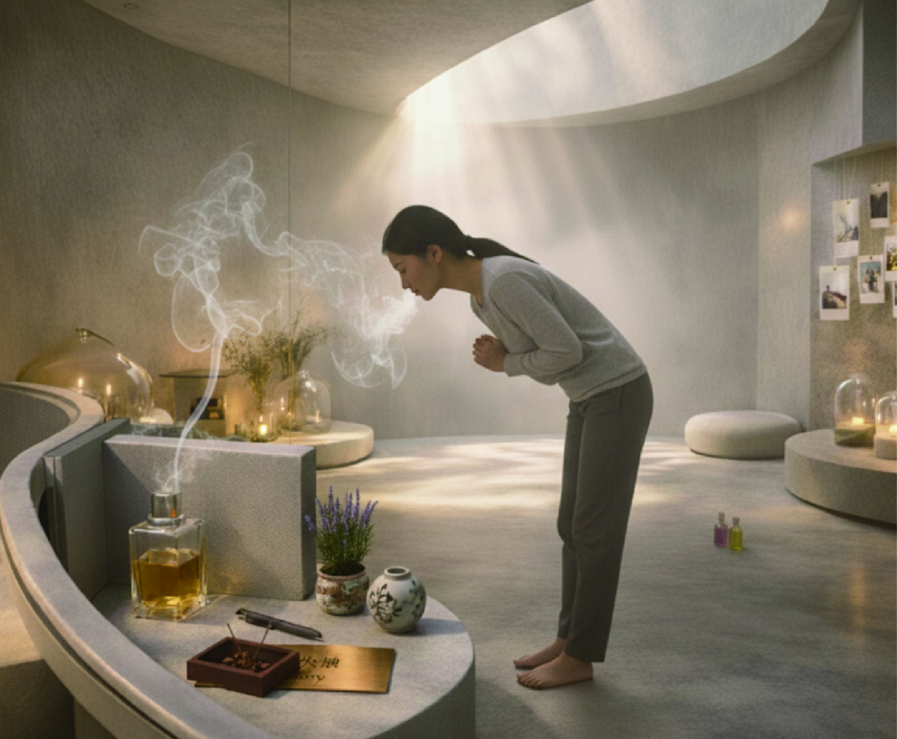
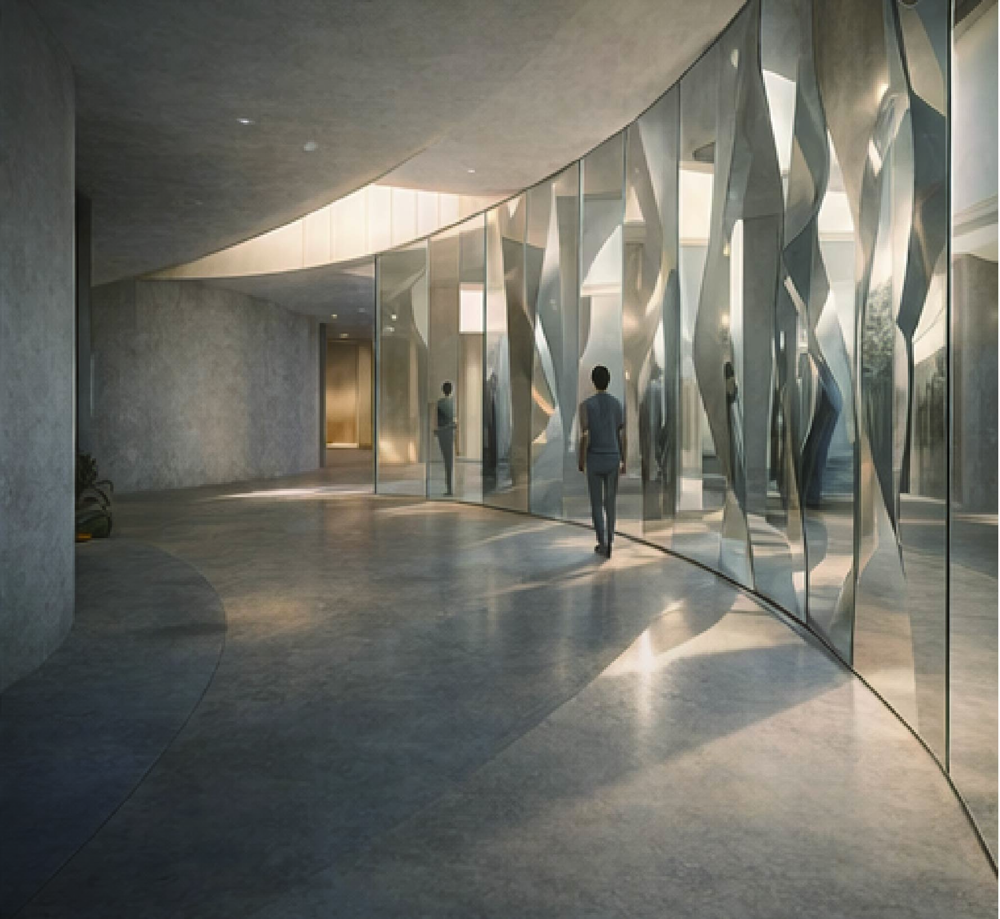

以今年的「馬」年作為空間靈感，象徵自由、力量與前進的勇氣。從俯視圖將空間轉化為馬的形態，引導使用者隨動線行走，如 同展開一段自我探索的旅程。透過光影與感官體驗，讓人在空間中釋放情緒，找回內心的平衡與自由。

平面圖 Plan View

立面圖 Elevation

剖面圖 Section

Stage 01利用反射看見不同狀態的自我，象徵對過去經驗的審視與對談。

Stage 02 - 觸覺陽光灑入，透過身體感受光線的溫度，在溫暖中接納並和自己和解。

Stage 03 - 聽覺在寂靜與微響的交替中，屏蔽外界雜訊，聆聽靈魂深處最真實的聲音。

Stage 04 - 視覺光影變化的色彩梯度，引導視覺引發的情緒波動逐漸走向平穩與沉澱。

Stage 05 - 嗅覺藉由特定的氣味觸發大腦深處記憶，在回憶中找尋失落的力量片段。

Stage 06透過出口處波浪狀的反射，看見多樣化且新生的自己，勇敢邁向未來。